How to prepare iPhone 4 with iOS 6.1.x for reverse engineering tasks
Here is an extremely detailed step-by-step instruction for a jailbroken iPhone 4 with iOS 6.1.x and Cydia installed. It will be useful for beginners, not for advanced reverse engineers.
Step 1. OpenSSH
First of all, install OpenSSH. On the iPhone, run Cydia and tap “OpenSSH Access How-To”:
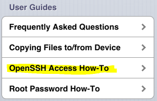
Tap the “OpenSSH” link:
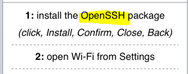
Tap “Install”
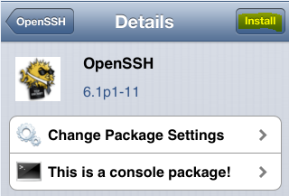
and “Confirm”:
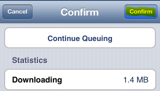
Wait until installation is completed and tap “Return to Cydia”:
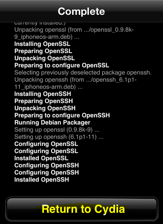
Now OpenSSH is installed. On the iPhone, open “Settings” → “Wi-Fi” and connect the iPhone to a Wi-Fi network (if it is not connected yet). Then tap the blue arrow icon next the Wi-Fi network name and note the IP address of the iPhone:
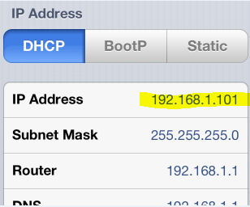
On a PC, connected to the same Wi-Fi network, run your favorite SSH client (Putty or whatever you use) and connect to the IP address you noted above. Use root as the login and alpine as the password. Enter passwd commands in the SSH console to change root and mobile passwords:
iPhone:~ root# passwd
Changing password for root.
New password: <type your new password here>
Retype new password: <retype your new password here>
iPhone:~ root# passwd mobile
Changing password for mobile.
New password: <type your new password here>
Retype new password: <retype your new password here>
Step 2. GDB
It’s time to install GDB. On the iPhone, run Cydia and tap “Manage” and “Sources”:
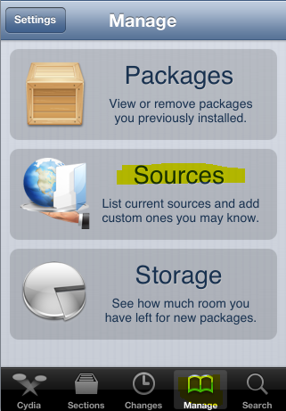
Tap “Edit”
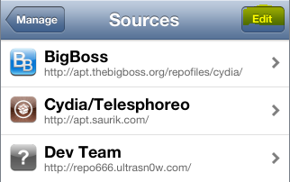
and “Add”:
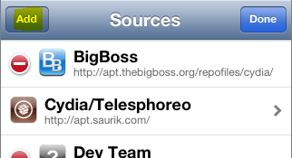
Enter http://cydia.myrepospace.com/ohmza/ and tap “Add Source”
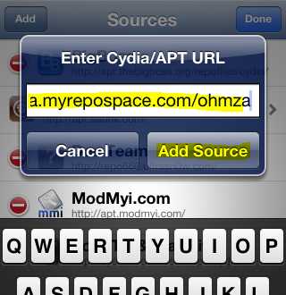
Wait until installation is completed and tap “Return to Cydia”:
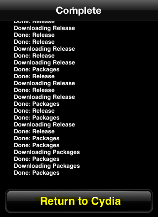
Tap “Sections”, choose “ohmza -myRepoSpace”:
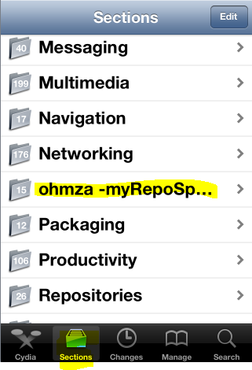
Tap “GNU Debugger (iOS 5&6)”:
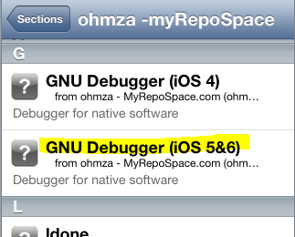
Then tap “Install”
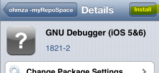
and “Confirm”
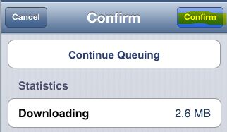
Wait until installation is completed and tap “Return to Cydia”:
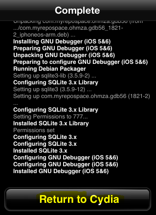
That’s it!
Step 3. *nix commands
To make well-known *nix commands (e.g. ps) working on the iPhone, install the adv-cmds package from Cydia. On the iPhone, run Cydia and tap “Sections” and “Administration”:
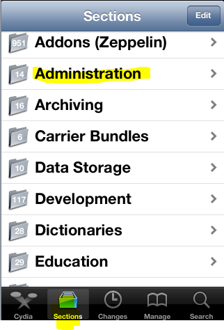
Then tap “adv-cmds”
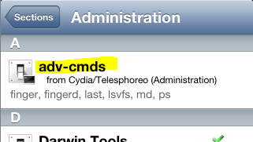
and “Install”
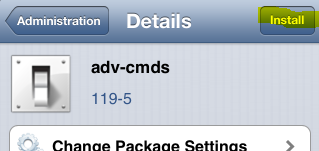
and, finally, “Confirm”
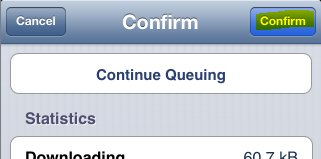
Wait until installation is completed and tap “Return to Cydia”:

That’s all. All links in the text were alive when posting.
Wanna say something?
Commenting is not available in this blog, but you can write me a letter or message. Please, note that English is not my native language. I'm sorry for mistakes/missprints, if any.
Prev: Twitter is watching you, anonymousNext: User-defined GDB commands on iOS